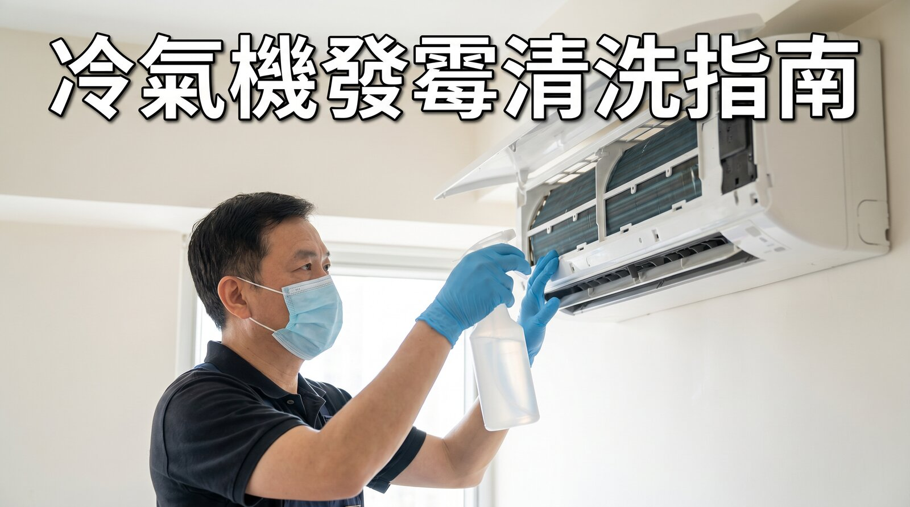

冷氣機內部長期潮濕，係霉菌理想嘅滋生環境，開機霉味通常源於此
文章重點摘要：冷氣機發霉主要因為蒸發器同風扇長期潮濕，形成霉菌滋生溫床。開機有霉味通常代表蒸發器已發霉，自行清洗濾網未必足夠，需要專業拆機清洗先能徹底解決，建議每年使用季節前清洗一次。
冷氣機點解會發霉？
香港夏天冷氣機長期運作，運作時產生嘅冷凝水加上密封內部空間，形成一個持續潮濕、缺乏陽光嘅環境，正正係霉菌最喜歡嘅滋生條件。蒸發器（俗稱冷氣機「散熱片」）同風扇葉片，係最容易積聚霉菌嘅位置。
每年一次
建議使用季節前深層清洗嘅頻率
蒸發器
冷氣機最容易積聚霉菌嘅內部位置
開機有霉味代表咩？
好多客戶都試過開冷氣一刻聞到陣陣霉味，過一陣先散去，呢個正正係蒸發器已經滋生霉菌嘅明顯訊號。霉味嚟自風吹過發霉嘅蒸發器表面，將霉菌孢子同氣味帶入室內。
⚠️ 持續吸入霉菌孢子嘅健康風險
- 可能引發過敏反應，如打噴嚏、鼻塞
- 對哮喘或呼吸道敏感人士影響較大
- 長期吸入可能加重呼吸道不適
- 兒童同長者對霉菌孢子較為敏感
DIY清洗嘅限制
好多客戶自己拆咗個濾網洗完就以為搞掂，但濾網淨係擋灰塵，真正發霉嘅蒸發器同風扇葉片喺機殼入面，一定要拆機先接觸到，呢個唔係自己拆吓濾網就處理到嘅。
— 麗雅清潔 Patrick 師傅- 濾網 — 可自行拆下用清水沖洗，屬於DIY可處理範圍
- 外殼表面 — 可用濕布定期擦拭
- 蒸發器 — 需要拆開機殼先能觸及，DIY風險高且效果有限
- 風扇葉片同風道 — 完全唔建議自行拆卸，觸電同損壞風險高
清洗頻率建議
| 使用情況 | 建議清洗頻率 | 濾網清潔 |
|---|---|---|
| 長期每日使用（夏季全日） | 每年2次（季初、季中） | 每2週一次 |
| 一般家庭使用 | 每年1次（使用季節前） | 每月一次 |
| 甚少使用 | 每1-2年一次 | 使用前檢查清潔 |
L&S 麗雅清潔公司提供香港全面嘅冷氣機發霉清洗服務，包括拆機清洗蒸發器同風道，歡迎WhatsApp查詢免費上門評估。